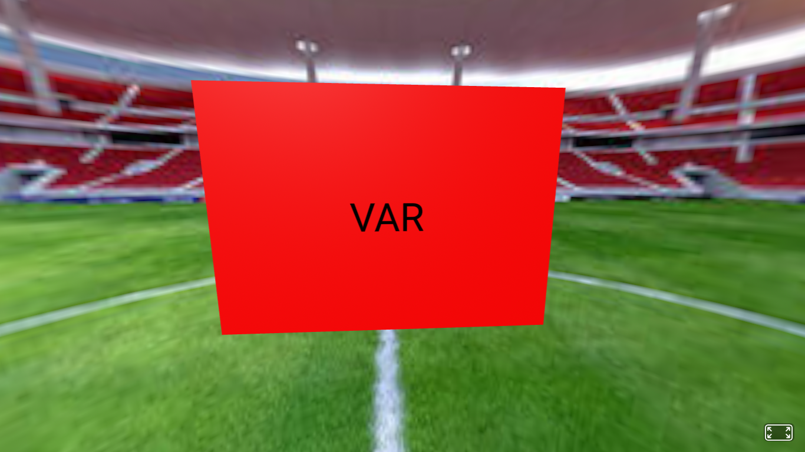

I am a student at HSTAT in the Software Engineering Program. The "Freedom Project" for SEP10 is a year-long project all about making a website that informs the viewer of the current and future innovations in the topic of my choosing. For my project, I chose the topic of sports.I used HTML, CSS, Bootstrap, and Github. I also chose to independently study Afram in order to help me make by website.
Since this project is a year-long project it had a lot of challenges and takaways. My first challenge and takeaway was remembering all the cods I learned in the beginning of the year, so I had to use my notes so I can remember all the old cods. ANother challenge and takeaway was learning my tool (Afram) to help me with my project, since my tool was a thing I had to learn on my own it was so hard for me, because there wasn't a lot of people to ask for help, because everyone chose different tool to learn. so I had to watch youtube videos and learn on my own. The last challenge and takeaway was customizing time to work on the project. since we had only one day in a week to work on our project, I had to customize some extra time to work on it because I had other things to do at school too. These were my challenges and takeways for my freedom project. Down here is the future invention of my project that I came up with and also used my tool (Afam) for it.
 Link to my project preview